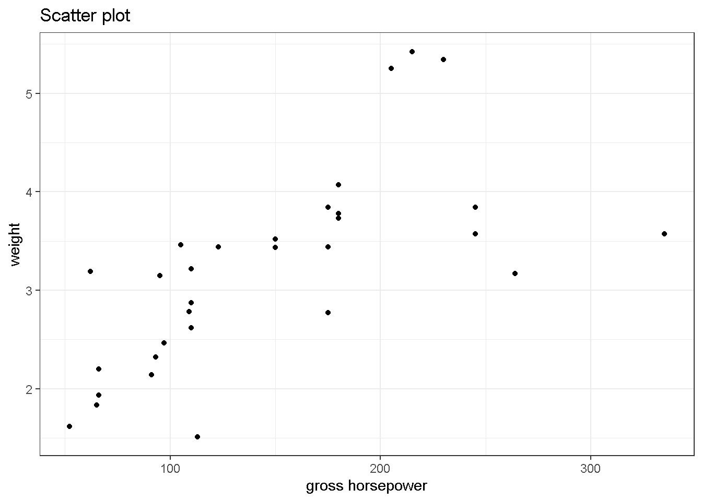

ggplot is one of the very popular package in R programming which will make your coding life very easy. Using this package we can create beautiful plot easily .
I will be using mtcars data set for this example
first lets start with loading package.
#install.packages("ggplot2")
library(ggplot2)
library(dplyr)
data("mtcars")
head(mtcars,5)## mpg cyl disp hp drat wt qsec vs am gear carb
## Mazda RX4 21.0 6 160 110 3.90 2.620 16.46 0 1 4 4
## Mazda RX4 Wag 21.0 6 160 110 3.90 2.875 17.02 0 1 4 4
## Datsun 710 22.8 4 108 93 3.85 2.320 18.61 1 1 4 1
## Hornet 4 Drive 21.4 6 258 110 3.08 3.215 19.44 1 0 3 1
## Hornet Sportabout 18.7 8 360 175 3.15 3.440 17.02 0 0 3 2now lets plot gross horsepower on x axis and weight on y axis
mtcars %>%
ggplot()+
aes(x=hp,y=wt)+
geom_point()+
xlab("gross horsepower")+
ylab("weight")+
ggtitle("Scatter plot") +
theme_bw()